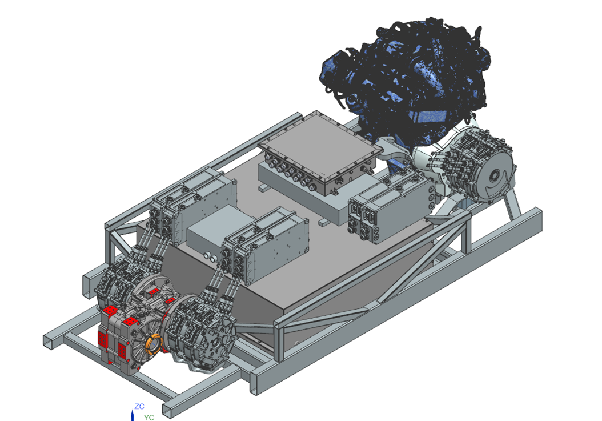

Drivetrain
By default, the vehicle has numerous sensors in two capacities, either built into the components related to the IC engine, inverters, motors, batteries, etc. or instrumented as sensors that serve as feedback in closed-loop sub-systems.
Each inverter relays vital information about motor speed, position, torque estimate, temperature, faults, and other non-critical statistics over the CAN bus.
